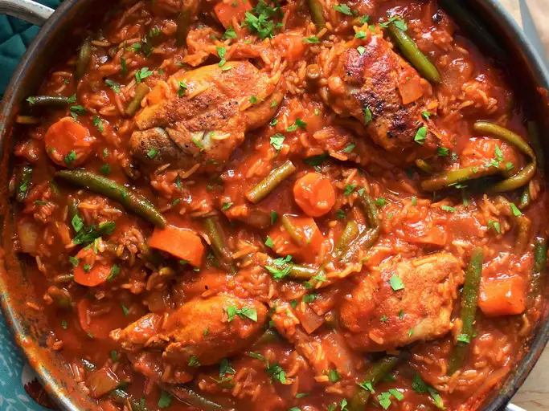

heres a look at Jollof rice

Description
this is ghanaian delicacy well known for it battle wars with its nigerian competitor.
ingredients
- rice
- onion
- pepper
- spices
- tomatoes
- chicken
- salt
Steps
- fecth a two cups of rice and rinse in water
- heat salted water no fire for five mins
- cut, blend and sieve onions, pepper and tomatoes
- pour a bit of oil and add a slices of onions to heat for a coulpe of mins
- pour the sieved mix of vegetables to the oil and onions
- heat till oil surfaces on top.
- add your rice to the mixture to cook
- cut, dress and season your chicken for frying.
- fry the chicken with oil in a clean saucepan until goldish brown
- check on your heating rice if water has simmered and rice has fully enveloped in the mixture.
- if so... volia! Your jollof is ready.
- kindly served with a sauce or not and enjoy!